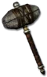

Hell Forge Hammer
Hell Forge Hammer
Damage: 6-15
+5 to Weapon Minimum Fire Damage
+20 to Weapon Maximum Fire Damage
+40% Fire Resistance
+35 Defense
Unique Quest Item
Hell Forge Hammer
- Type
- Quest Item
- Base
- Hell Forge Hammer
- Tier
- Normal
- Max sockets
- 5